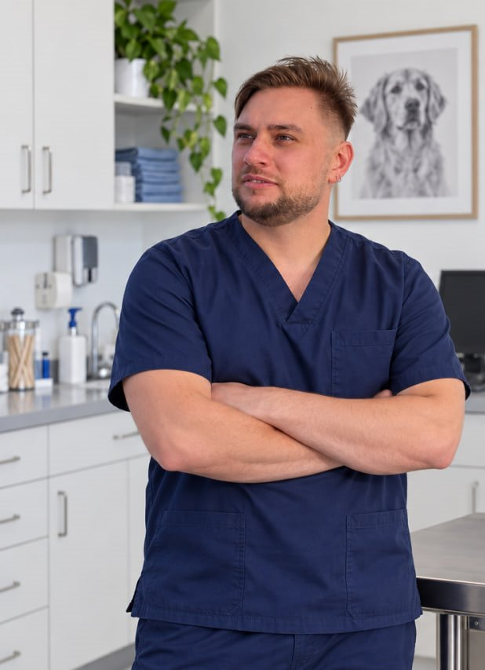
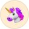
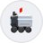
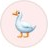
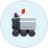
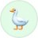
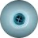

Клиника хорошая! Я как владелец питомника канадских сфинксов, могу сказать, что все врачи там профессионалы своего дела. Однажды был случай, что наша любимая Карамелька начала рожать-6 котят родила сама и на этом родовая деятельность закончилась, но я поняла, что родила она еще не всех. Позвонила в клинику, рассказала ситуацию. Врачи сказали срочно везти мать и котят в клинику. Привезла, на смене был Белорыбец Владислав Викторович, который тут же оперативно провел ультразвук, сделал рентген, который показал, что один котенок застрял и на этом остановилась родовая деятельность. Владислав тут же начал делать кесарево сечение и спас жизнь еще двум котятам и нашей любимой Карамельке. Это один из случаев, когда в этой клинике спасали моих кошек, за что огромная благодарность всему персоналу этой клиники!Если вы любите своих животных и хотите спасти им жизнь, то обращайтесь только в эту клинику.Здесь работают неравнодушные люди, которые обязательно вам помогут!
Операции кошкам и собакам в Люберцах
Плановые и экстренные операции.
По приглашению оперирую в ветеринарных клиниках Москвы и области.
- Плановые
операции - Экстренная
запись - Выезд
в клиники

Экстренная запись на приём
От консультации до снятия швов
- День обращения
Консультация
Осматриваю и объясняю, нужна ли операция.
- По показаниям
Обследование
Анализы, УЗИ, рентген: только то, что влияет на решение.
- День операции
Операция
После операции звоню владельцу.
- Часы или дни
Стационар
Домой — с письменными рекомендациями.
- 10–14 день
Контроль
Осмотр и снятие швов.
Ветеринарная хирургия
Опишите проблему своими словами — поиск подскажет, какая операция скорее всего нужна.
Общая хирургия18
- Ампутация конечностикошка23 000 ₽
- Ампутация конечностисобака, 1-я категория17 250 ₽
- Ампутация конечностисобака, 2-я категория34 500 ₽
- Ампутация хвоста11 500 ₽
- Гематома ушной раковиныодно ухо10 000 ₽
- Дренирование полости раны3 450 ₽
- Первичная хирургическая обработка раны1-я категория3 000 ₽
- Первичная хирургическая обработка раны2-я категория5 000 ₽
- Первичная хирургическая обработка раны3-я категория8 000 ₽
- Пластика носогубной складки11 500 ₽
- Пластика твёрдого нёба28 750 ₽
- Расширение слухового прохода1-я категория10 000 ₽
- Расширение слухового прохода2-я категория17 000 ₽
- Резекция кисты слюнной железы20 000 ₽
- Ринотомиякошка23 000 ₽
- Ринотомиясобака25 000 ₽
- Атрезия ануса17 250 ₽
- Эзофагостомакошка или собака, временная3 450 ₽
Абдоминальная и торакальная хирургия31
- Адреналэктомия30 000 ₽
- Гастропексияоткрытая15 000 ₽
- Гастротомиякошка17 250 ₽
- Гастротомиясобака23 000 ₽
- Диагностическая лапаротомиякошка17 250 ₽
- Диагностическая лапаротомиясобака17 250 ₽
- Лобэктомия печеникошка25 000 ₽
- Лобэктомия печенисобака30 000 ₽
- Заворот желудка34 500 ₽
- Пластика мышц брюшной стенкикошка11 500 ₽
- Пластика мышц брюшной стенкисобака11 500 ₽
- Резекция кишечникакошка25 000 ₽
- Резекция кишечникасобака25 000 ₽
- Спленэктомиякошка17 250 ₽
- Спленэктомиясобака23 000 ₽
- Удаление инородного тела из грудного отдела пищевода26 100 ₽
- Установка дренажа в брюшную полость6 800 ₽
- Установка дренажа в грудную полость11 500 ₽
- Выпадение прямой кишки1-я категория10 000 ₽
- Выпадение прямой кишки2-я категория15 000 ₽
- Выпадение прямой кишки3-я категория20 000 ₽
- Абсцесс поджелудочной железы30 000 ₽
- Диафрагмальная грыжакошка28 750 ₽
- Диафрагмальная грыжасобака28 750 ₽
- Дивертикул пищеводакошка17 250 ₽
- Дивертикул пищеводасобака23 000 ₽
- Паховая грыжа23 000 ₽
- Пупочная грыжакошка8 050 ₽
- Пупочная грыжасобака8 050 ₽
- Энтеротомиякошка20 000 ₽
- Энтеротомиясобака20 000 ₽
Онкологическая хирургия34
- Ампутация пальца при опухоликошка, 1-я категория5 750 ₽
- Ампутация пальца при опухоликошка, 2-я категория11 500 ₽
- Ампутация пальца при опухолисобака9 400 ₽
- Ампутация пальца при опухолис удалением лимфоузла11 850 ₽
- Вылущивание липомы1-я категория5 750 ₽
- Вылущивание липомы2-я категория11 500 ₽
- Иссечение множественных опухолей кожи1-я категория10 800 ₽
- Иссечение множественных опухолей кожи2-я категория14 250 ₽
- Лампэктомия11 500 ₽
- Лимфаденэктомия11 500 ₽
- Открытая биопсия5 750 ₽
- Мастэктомиярегионарная, собака до 10 кг11 500 ₽
- Мастэктомиярегионарная, собака 10–20 кг17 250 ₽
- Мастэктомиярегионарная, собака более 20 кг23 000 ₽
- Мастэктомияодносторонняя, кошка17 250 ₽
- Мастэктомияодносторонняя, собака до 10 кг17 250 ₽
- Мастэктомияодносторонняя, собака 10–25 кг23 000 ₽
- Мастэктомияодносторонняя, собака более 25 кг40 250 ₽
- Мастэктомиятотальная, кошка13 800 ₽
- Мастэктомиятотальная, собака18 050 ₽
- Удаление опухолей кожи1-я категория5 000 ₽
- Удаление опухолей кожи2-я категория10 000 ₽
- Удаление опухолей кожи3-я категория15 000 ₽
- Удаление опухолей кожи4-я категория18 000 ₽
- Удаление опухоли мягких тканейдо 3 см10 000 ₽
- Удаление опухоли мягких тканей3–5 см15 000 ₽
- Удаление опухоли мягких тканейболее 5 см23 000 ₽
- Удаление опухоли перианальных желёз13 800 ₽
- Удаление опухоли перианальных желёзвместе с кастрацией кобеля11 500 ₽
- Удаление опухоли ротовой полости1-я категория17 250 ₽
- Удаление опухоли ротовой полости2-я категория28 750 ₽
- Удаление опухоли ротовой полости3-я категория34 500 ₽
- Удаление опухоли с пластикой23 000 ₽
- Удаление опухоли семенника15 000 ₽
Ортопедия и травматология18
- Артродез сустава46 000 ₽
- Остеосинтезаппаратом внешней фиксации (free form)24 000 ₽
- Остеосинтезпластиной, кошка или собака32 000 ₽
- Остеосинтез челюсти2-я категория11 000 ₽
- Пластика связки1-я категория15 000 ₽
- Пластика связки2-я категория20 000 ₽
- Пластика связки3-я категория25 000 ₽
- Протезирование связкисобака25 000 ₽
- Резекция головки бедренной костикошка23 000 ₽
- Резекция головки бедренной костисобака23 000 ₽
- Удаление металлоконструкцийснятие спиц, 1-я категория3 000 ₽
- Удаление металлоконструкцийснятие спиц, 2-я категория5 000 ₽
- Удаление металлоконструкцийснятие спиц, 3-я категория10 000 ₽
- Удаление металлоконструкцийпластины, винты, серкляжи, 1-я категория5 000 ₽
- Удаление металлоконструкцийпластины, винты, серкляжи, 2-я категория10 000 ₽
- Фиксация вывиха тазобедренного сустава28 000 ₽
- Авульсионный перелом25 000 ₽
- Внутрисуставной перелом35 000 ₽
Урология8
Репродуктивная хирургия27
- Кастрация кота4 600 ₽
- Кастрация котасо скротумэктомией8 050 ₽
- Кастрация собакилюбой вес8 050 ₽
- Кастрация крипторхакот, семенник под кожей5 750 ₽
- Кастрация крипторхакот, семенник в брюшной полости11 500 ₽
- Кастрация крипторхасобака, семенник под кожей11 500 ₽
- Кастрация крипторхасобака, семенник в брюшной полости17 250 ₽
- Кастрация хорька10 200 ₽
- Кесарево сечениекошка17 250 ₽
- Кесарево сечениесобака до 10 кг20 000 ₽
- Кесарево сечениесобака 10–20 кг25 000 ₽
- Кесарево сечениесобака более 25 кг34 500 ₽
- Пиометракошка15 000 ₽
- Пиометрасобака до 10 кг15 000 ₽
- Пиометрасобака 10–25 кг17 000 ₽
- Пиометрасобака более 25 кг23 000 ₽
- Пластика влагалищной складки15 000 ₽
- Промежностная грыжакомплекс38 500 ₽
- Скротумэктомия15 000 ₽
- Стерилизациякошка10 350 ₽
- Стерилизациясобака, любой вес11 500 ₽
- Абсцесс культи матки или яичникаабсцесс культи матки25 000 ₽
- Абсцесс культи матки или яичникалигатурный абсцесс культи яичника, 1-я категория25 000 ₽
- Абсцесс культи матки или яичникалигатурный абсцесс культи яичника, 2-я категория30 000 ₽
- Пролапс влагалища17 250 ₽
- Эпизиотомия1-я категория11 500 ₽
- Эпизиотомия2-я категория23 000 ₽
Раны и пластика кожи12
- Вскрытие абсцесса или флегмоны1-я категория1 150 ₽
- Вскрытие абсцесса или флегмоны2-я категория5 750 ₽
- Вскрытие абсцесса или флегмоны3-я категория8 750 ₽
- Иссечение некротических участков кожи4 000 ₽
- Ушивание ранкожно-мышечные швы, 1-я категория4 000 ₽
- Ушивание ранкожно-мышечные швы, 2-я категория6 000 ₽
- Ушивание ранкожно-мышечные швы, 3-я категория10 000 ₽
- Ушивание ранкосметический шов2 100 ₽
- Пластика кожи1-я категория10 000 ₽
- Пластика кожи2-я категория15 000 ₽
- Пластика кожи3-я категория20 000 ₽
- Пластика кожи4-я категория35 000 ₽
Послеоперационные процедуры6
Анестезия и реанимация10
- Анестезиямедикаментозная подготовка2 500 ₽
- Анестезияместная анестезия (блокада)750 ₽
- Анестезияэпидуральная анестезия3 050 ₽
- Анестезияобщая анестезия при стерилизации3 400 ₽
- Анестезияобщая анестезия, 1-я степень4 000 ₽
- Анестезияобщая анестезия, 2-я степень8 000 ₽
- Анестезияобщая анестезия, 3-я степень10 500 ₽
- Анестезияобщая анестезия, 4-я степень12 500 ₽
- Анестезияобщая анестезия, 5-я степень13 800 ₽
- Сердечно-лёгочная реанимация6 300 ₽
Предложили операцию, но вы сомневаетесь?
Пришлите документы в мессенджер или на почту. Посмотрю и отвечу, нужна ли операция и сколько она будет стоить.
- Заключение врача
- Анализы крови за 2 недели
- Снимки рентгена, УЗИ или КТ
- Вид, возраст и вес питомца
Владислав Белорыбец
Два-три предложения от первого лица: почему хирургия и какие операции делает чаще всего.
- Оперирую
- с ____ года
- Образование
- вуз, год
- Обучение
- курсы, стажировки
- Принимаю
- Клиника «Добрый Доктор», Люберцы, ул. Вертолётчиков, 11
Хирург по приглашению
Приезжаю в вашу клинику: беру сложные операции, ассистирую вашим врачам, помогаю с хирургической тактикой. Пришлите диагноз и снимки — назову дату и стоимость.
Полезное владельцам
Что делать в экстренной ситуации, как подготовить питомца к операции и ухаживать после неё.
Что пишут владельцы
Отзывы о работе Владислава из карточки клиники «Добрый Доктор» на Яндекс Картах.
Хочу оставить положительно отзыв о клинике, о её сотрудниках и в частности о враче Владиславе Викторовиче. Моя кошка сломала лапу, привезли её ночью, на нервах.. Всех успокоили, кошке помогли, сделали операцию, поставили спицу, все рассказали, объяснили. Прошло полтора месяца, кошка отлично себя чувствует, не хромает. Рекомендую эту клинику и этого врача. Больше спасибо

Марта Н.Доверяю этой клинике на все 100%. Однажды выбрали ее за круглосуточный график и возможность приема без предварительной записи, и теперь продолжаем выбирать за ответственное отношение к животным.
Особая благодарность Владиславу Викторовичу за оперативно проведенную операцию по извлечению инородных предметов из кишечника собаки. Под присмотром профессионалов быстро идем на поправку.
…У меня 4 животных. Каждого из них осматривал глав врач и Владислав Викторович.
Спас мою кошку Марту,проводил операции для нее даже в не рабочее время. Доктор искренне заинтересован состоянием и здоровьем вашего питомца.
Марта лежала почти месяц в стационаре,справилась со всеми своими переломами,ушибами, в то время,когда другая ветклиника говорила: «ей ничего не поможет»,но Владислав Викторович и его коллеги показали мастерство высшего уровня!!!
Рекомендую эту ветеринарную клинику и Владислава Викторовича.
Неделю назад нашего Красавчика сбила машина. Сразу прибежали в клинику, в этот день к нашему счастью😊работал Белорыбец Владислав Викторович. Доктор оперативно сделал рентген, выявил повреждения, оказал первую помощь, положил под капельницу, обрисовал какие могут быть последствия, ответил на все наши что? как ? и почему? 👍
В стационаре пробыли 2 дня, далее поехали в другую клинику на МРТ и КТ, для подтверждения диагноза ЧМТ. Очень ценно, что Доктор просил звонить в Клинику и рассказывать как у нас дела, поддерживал, советовал как лучше поступить, максимально проникся травмой нашего пёсика, проявил профессионализм и человеческие качества, что большая редкость в наше время.
Сейчас мы снова вернулись в стационар Клиники, нам назначили терапию, ходим на капельницы и уколы, динамика положительная есть и мы верим, что наш Злюка😉 будет бегать как раньше.
От всего сердца большая благодарность Владиславу Викторовичу и всей команде Клиники👏🏻дай Бог Вам здоровья, терпения и побольше благодарных пациентов🙌🏻
Дополняю отзыв 16.04
Всё самое страшное позади, наш пёсик идёт на поправку, бегает и потихоньку вспоминает свою собачью жизнь и повадки до травмы, что нас ооочень радует🙏🏻это значит - лечение подобрано верно, огромное спасибо🤝 что подарили 2ю жизнь🐕
Словами не выразить нашу огромную благодарность заботливому и внимательному врачу Владиславу Викторовичу Белорыбец за спасение жизни нашей маленькой кошечки сфинкса Лилу! Вы наш герой! … Владислав Викторович внимательно выслушал наши жалобы, осмотрел Лилу, сделал рентген. Диагноз был поставлен четко и оперативно, врач сказал что присутствует инородный предмет и решил не терять время и делать операцию, сказал что уже поздно обратились, котенок сильно обезвожен. Мы доверились ему полностью, хотя было очень страшно за нашу малышку. Персонал нас подбадривал и юморил, мы очень переживали и страшно боялись за нашу доченьку, пережили большой стресс. Операция была сложная, но все прошло успешно. Выяснилось что наша Лилу наелась ниток!! Врач показал нам эти нитки. Шок не описать словами. После операции 2 дня наша Лилу оставалась под наблюдением в клинике, мы ее навещали, врачи давали все необходимые рекомендации, показывали видео что все хорошо. После нам назначили дополнительное лечение, которое мы проводили дома и приезжали в клинику на уколы и обработку шва. Прошло уже почти 2 недели после операции, наша малышка довольно быстро пошла на поправку, наконец швы сняли, кошечка заметно лучше себя чувствует, игривая, кушает хорошо, а мы очень счастливы что все прошло благополучно и самое страшное уже позади, теперь будем внимательнее следить за нашим котеребенком. Спасибо наш замечательный добрый доктор Владислав Викторович, чувствуется с какой заботой и любовью вы относитесь к нашим питомцам, нам очень повезло что попали на вашу смену, всего вам самого наилучшего, вы действительно очень хороший профессионал и небезразличный человек, это сейчас очень редко встретишь и дорогого стоит!!! Мы нашли своего врача которому можно довериться, теперь только к вам, спасибо, спасибо и еще раз спасибо! ❤️❤️❤️

Эля ТвердохлебоваБольшое спасибо главному врачу Белорыбец Владиславу Викторовичу за бережное отношение, профессионализм и консультацию. Врач верно определил диагноз , успешно провел операцию и наша Терри теперь здорова.

МММ Г.Огромное спасибо хирургу Владиславу Викторович за профессиональную работу и за доброе отношение к животным.
Волонтёрский слепой возрастной пёс Рыжий без вашей помощи мог погибнуть. Здоровья вам, благополучия и долгих лет
Хочу выразить мою глубочайшую благодарность Владиславу Викторвичу и коллективу вет.клиники Добрый Доктор за спасение моего Голдена‼️Ситуация была критической,если бы не Владислав Викторович ‼️Его профессионализм, компетенция и скорейшая своевременная диагностика пациента‼️Слава Богу ,что у нас есть такие специалисты,которым можно безоговорочно доверить жизнь своего питомца и знать ,что она в надёжных руках🙏Сейчас мой "хвостик" бегает ‼️Здоров,весел и счастлив)Быстро встал на лапы😊и радуется жизни ‼️СПАСИБО ‼️ВАМ‼️ОГРОМНОЕ‼️

Жанна ГришковаНаблюдаем мопса в этой клинике. Персонал компетентный, внимательный. Работают круглосуточно.
Удаляли очень сложное новообразование. Спасибо врачу Белорыбец В. В. Все сделал на высшем уровне. Сейчас лечимся, уже есть улучшения. Клинику рекомедую
Хочу выразить огромную благодарность врачу Владиславу Викторовичу и всей команде клиники! 🙏❤️
Владислав Викторович — не просто профессионал с золотыми руками, а человек с большим сердцем. Он вылечил моего котёнка, помог моей кошке Лилу, которая находилась в тяжёлом состоянии, и спас ещё одну кошку — Агушу. Его опыт, чуткость и внимание к каждой детали — это то, что отличает настоящего доктора.
Отдельно хочу поблагодарить весь персонал. Даня — спасибо за чуткость и поддержку. Администратор Ирина — за помощь в родах, за то, что растирала котят вместо мамы, когда Лилу не могла подойти. Это бесценно. Вы все — команда, которая делает невероятно важное дело.
Спасибо за вашу заботу, терпение и любовь к животным. Вы спасли не одну жизнь. Низкий поклон вам за это. 💖
Рекомендую клинику всем, кто любит своих питомцев и хочет доверить их в надёжные руки.
Сердечно благодарю ветеринарную клинику «Добрый Доктор» и отдельная благодарность Доброму Доктору – Былорыбец Владиславу Викторовичу, за его неоценимую помощь! Наш котенок Луна попала в неприятную ситуацию — она застряла в заборе и повредила лапку. Мы были в ужасе, но Владислав Викторович проявил невероятное терпение и заботу. Он не только вылечил Луну, но и объяснил нам, как правильно ухаживать за ней в период восстановления. Теперь наша малышка снова прыгает и играет. Вы — настоящие профессионалы!

Алана П.Всем здравствуйте! Хочу выразить огромную благодарность врачу Владиславу за его грамотный подход к лечению наших маленьких друзей. У моего кота достаточно давно начались проблемы с пищеварением, обращались во многие клиники, но лечение ограничивалось снятием симптома на 1-2 дня . Владислав же помог нам: назначил препараты, корм и теперь котик чувствует себя прекрасно!
Первый раз были в вашей клинике в феврале. Обратились с больными ушками нашей девочки-лабрадора! Доктор Владислав Викторович внимательно остотрел мою малышку, поставил диагноз и прописал лечение. Мы пролечились и наши ушки теперь здоровы! Спасибо большое доктору и клинике в целом за бережное и внимательное отношение к нашим питомцам! Вернёмся к вам на прививки)))
Отличная клиника, всех своих питомцев лечим только там. Белорыбец Владислав Викторович - врач от бога. Ездим только к нему, прекрасное отношение и сопереживание. Рекомендую на все 100%
Очень понравилась ветклиника. Приём был проведён быстро и оперативно. Первый раз собака даже не отреагировала на прививку от бешенства. Даже не успела понять что уже всё. Потрясающий врач Белорыбец В.В.. Спасибо огромное за приём! Будем Вас обязательно рекомендовать!🙏🏼👍🏼🌺👏🏻
P.S. Все сотрудники ветклиники «Добрый доктор» очень дружелюбные, всё объясняют, если нужно проконсультируют!
Спасибо большое врачу Владиславу Викторовичу, который неоднократно помогал нашим котам и крыске
Профессионализм на высшем уровне. Все быстро и качественно.
Всем рекомендую 🙏🏼
Хочу поблагодарить врача Белорыбец Владислава Викторович. Замечательный профессионал. И очень добрый человек.

Müll TrashЗамечательная клиника. Неоднократно обращались туда за помощью и с вопросами. Очень приветливый и отзывчивый персонал. Всегда квалифицированная помощь и быстрое решение вопроса.Отдельные спасибо ,доктору Белорыбец В . В.
Люберцы, ул. Вертолётчиков, 11
Ветеринарная клиника «Добрый Доктор». Приём с 10:00 до 22:00 по графику. Ориентир и парковка
- Телефон
- +7 (939) 255-77-71
- WhatsApp и Telegram
- номер
- Почта
- vladislav@belovet.ru
- Приём